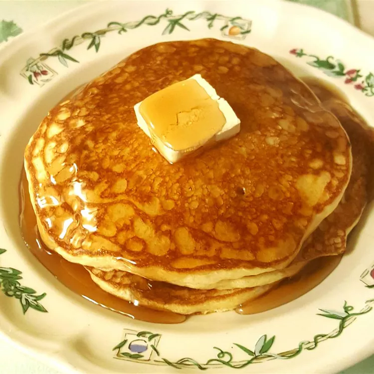

Buttermilk Pancakes

Description
Buttermilk pancakes are a breakfast classic, cherished for their light and fluffy texture, a result of the perfect balance between the acidic tang of buttermilk and the leavening agents at play. The batter, a blend of flour, buttermilk,
eggs, and a hint of sweetness, is mixed to a smooth consistency, creating a luscious and pourable base.
As these golden discs sizzle on the griddle, they undergo a magical transformation, forming a crispy outer layer that gives way to a pillowy soft interior.
The aroma of these pancakes as they cook is irresistible,
promising a morning treat. Whether adorned with a pat of melting butter, a drizzle of maple syrup, or a dusting of powdered sugar,
buttermilk pancakes offer a comforting and indulgent breakfast experience that never fails to bring joy to the table.
Ingredients
- 1 cup flour
- 1 teaspoon salt
- 1 teaspoon baking soda
- 1 large egg
- 1 ⅛ cups buttermilk
- 2 tablespoons butter, melted
Steps
- Preheat and lightly grease a large skillet or electric griddle.
- Mix flour, salt, and baking soda together in a bowl. Add egg, buttermilk, and butter; stir together lightly, but keep it lumpy. The batter should look thick, spongy, and puffy.
- Drop 1/3 cup of the batter onto the cooking surface, spreading lightly with the bottom of the cup. Cook until lightly browned on each side, 1 to 2 minutes per side.